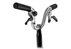
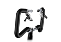
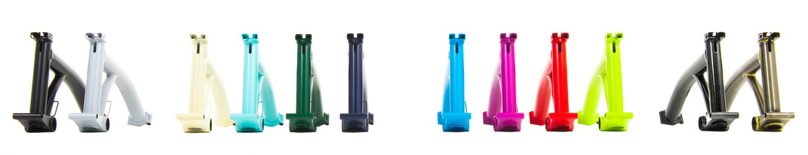
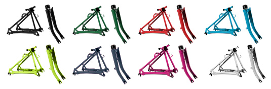
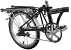
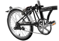
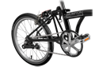

- KOR
- ENG


-
Why
Brompton?
접이식 미니멜로의 대명사 브롬톤은 엔지니어 출신의 창업자 앤드루 리치가 독자적으로 개발한 접는 방식을 통해 역사상 가장 콤팩트한 자전거를 선보였습니다. 자신들에게 브랜드란 곧 '품질'이라고 말할 만큼 제품의 완성도에 대한 집념이 강한 브롬톤은 뛰어난 휴대성과 강력한 주행력을 바탕으로 넓은 평원이 아닌 복잡한 도심에서 현대인들에게 강력한 이동 수단을 제공하고자 합니다.

-
 -ANDREW-RITCHIE-BROMPTON-ORATORYFOLDING-BIKE
-ANDREW-RITCHIE-BROMPTON-ORATORYFOLDING-BIKE -
브롬톤 자전거는 영국 브롬톤사의 설립자 앤드류 리치(Andrew Ritchie)가 1975년에 디자인한 접이식 자전거 입니다.앤드류 리치는 방 창문 밖 으로 보이던 성당(Brompton Oratory)의 이름으로 자신이 디자인한 자전거의 이름을 지었습니다. 몇 번의 변화를 거쳐 지금의 모습을 갖게 된 브롬톤은 아직까지도 가장 완벽한 접이식 자전거입니다.
가장 미니멀하고
가장 아름답게
접히는 미니벨로
-
BROMPTON S2L
-

Folding Guide
-
01 Folding
- 브롬톤과 기존 접이식 자전거의 차이는 ‘접는 방식’에 있다. 개발자 앤드류 리치는 좀 더 콤팩트하게 접기 위해 획기적 개념을 도입했다. 튀어나온 핸들바와 시트, 뒷바퀴 같은 다양한 부분을 중앙으로 모은 것이다.

-
02 Semi-Folding

- 브롬톤은 레버 하나로 단 1초만에 리어 파츠를 반으로 폴딩하여 자립이 가능하도록 설계되어 있어 별도의 스탠드가 필요하지 않습니다.
-
03 Unfolding
- 완전 펼쳐진 상태의 브롬톤은 폴딩자전거중 가장 미니멀한 완성도를 보여주는 디자인입니다. 또한 일반 자전거보다 넓은 휠베이스를 채택해 타 미니벨로에서 느낄 수 없는 탁월한 안정성을 느낄 수 있어 장거리 라이딩도 무리없이 가능합니다.


-
Handle Bar Type
-
- 
- 
-
- H-type
(1072mm) - M-type
(1015mm) - P-type
(1033mm) - S-type
(935mm)
- H-type
- 무게가 증가하지만 M타입의 클래식한 모습과 높은 라이딩 포지션을 결합한 H타입은 느긋한 스타일로 여행하고자 하는 사람들을에게 적합합니다.
-
Frame Color
- 
- 모니터 색상과 실제 색상이 다를 수 있습니다.
-
Extremities Color
- 
- 모니터 색상과 실제 색상이 다를 수 있습니다.
-
Mudguards/Rack Extremities
-
- 
- 
- 
-
- Version R
- Version L
- Version E
- 10KG의 짐을 적재할수있는 랙과 머드가드, 펌프를 제공합니다. 장거리 라 이딩에 적합하며 폴딩시 안정성이 뛰어나 폴딩상태에서 이동하기 좋습니다.
-
Gears Extremities
-
-
- 1 Speed
(무게변화없음) - 2 Speed
(0.188kg 증가) - 3 Speed
(0.738kg 증가) - 6 Speed
(0.92kg 증가)
- 1 Speed
-
The purist’s choice: light, simple and without clutter.
Based on the unique Brompton derailleur system, with near perfect chain-alignment, this is the best set-up for flexibility and portability: one gear for hills and starting off, one for cruising.
The BSR [Brompton Standard Range] is an updated version of the classic Sturmey Archer three-speed hub in an aluminium alloy shell. Fully enclosed for reliability and easy to use: a popular choice for everyday cycling.
The combination of the highly-efficient BWR [Brompton Wide Range] hub with our derailleur system gives six evenly-spaced gears. With its low transmission losses and wide range, this is the right choice for touring and for riding in hilly areas.